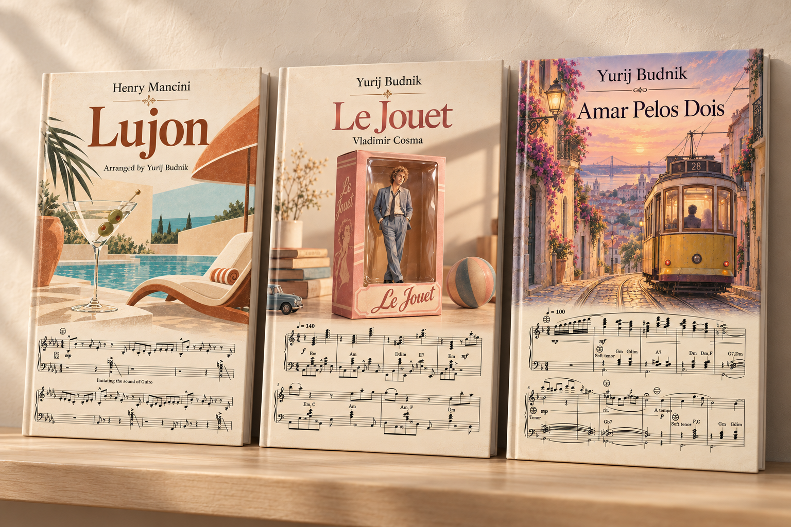

CLASSIC
Prelude No. 4
Frédéric Chopin
Глибоке, ліричне звучання класики.
2:58
BayaNova — це мій погляд на баян: класична глибина, сучасний пульс, естрадна лірика і нове звучання інструмента.

Три композиції — три різні грані мого звучання.
Frédéric Chopin
Глибоке, ліричне звучання класики.
Billie Eilish
Сучасний поп, рух і несподіваний грув.
Frank Sinatra · 1960s
Романтичний шлягер із теплим, співучим звучанням.
Мої аранжування популярної музики для тих, хто хоче відкрити сучасне звучання баяна.
Переглянути ноти
Відкритий до концертних запрошень, фестивалів та спільних творчих проєктів.